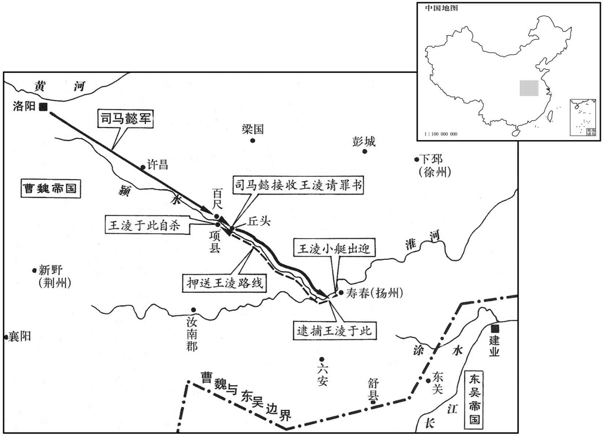

公元251年资治通鉴：本年记事、原文与白话对照
按原书编年位置阅读；追叙和史论不等于本年发生的事件。白话采用所据译本，缺译不以生成译文补齐。
卷75 · 本年记事
公元251年 · 魏烈祖明皇帝嘉平三年
三年〔（辛未、二五一）〕
上传原文的注释括号有异常，字符原样保留；无法可靠划分的段落默认全文显示。
本年事件索引（现代整理）
- 王基、州泰击败吴军，数千人投降
- 司马孚任司空
- 王昶任征南大将军
- 魏国大赦
- 王凌密谋拥立楚王，黄华、杨弘告发后司马懿率军讨伐
- 王凌向司马懿请罪，得知将被送往洛阳后服毒自尽
- 司马懿追究王凌、令狐愚谋反，诛杀相关人员并暴尸其墓
- 令狐愚早被族叔预言将败亡，最终果遭灭族
- 杨康告发令狐愚，司马懿对质后处死单固与杨康
- 诸葛诞任镇东将军，统领扬州军务
- 孙权立潘夫人为皇后，改元太元并大赦
- 曹芳赐死楚王曹彪，将诸王迁往邺城严密监视
- 皇后甄氏去世
- 司马孚任太尉
- 司马懿去世，司马师接掌辅政
- 司马师采纳邓文建议，分置南匈奴部众以加强边防
- 孙权向陆抗承认曾听信谗言、亏待陆逊
- 孙权欲召回太子孙和，遭全公主、孙峻、孙弘阻止
- 孙权托付后事于诸葛恪，吕岱劝其凡事三思
- 虞喜认为诸葛恪拒听吕岱劝告，已显自负败兆
- 诸葛恪受命辅政，孙权命群臣政务皆先交其裁决
- 郑冲任司空
- 费祎迁驻汉寿，因听信望气之说
- 吕乂去世，陈祗代理尚书令

本年形势与背景参考图
春，正月，王基、州泰击吴兵，皆破之，降者数千口。
春季，正月，王基、州泰进击吴国军队，都获得胜利，投降者有数千人。
二〔【章：乙十一行本「二」作「三」；张校同；退斋校同。】〕月，以尚书令司马孚为司空。
三月，任命尚书令司马孚为司空。
夏，四月，甲申，以王昶为征南大将军。〔以破吴兵进律也。〕
夏季，四月，甲申（初九），任命王昶为征南大将军。
壬辰，大赦。
壬辰（十七日），实行大赦。
太尉王凌闻吴人塞涂水，〔即前所作堂邑、涂塘也。杨正衡曰：涂，音滁。据今滁河，自滁州至真州。塞，悉则翻。〕欲因此发兵，爻严诸军，表求讨贼；诏报不听。凌遣将军杨弘以废立事告兖州刺史黄华，华、弘连名以白司马懿，懿将中军乘水道讨凌，先下赦赦凌罪，又为书谕凌，已而大军掩至百尺。〔水经注：沙水东南过陈县，又东南流注于颍，谓之交口。水次有大堰，即古百尺堰；司马宣王讨王凌，大军掩至百尺，即此地。杜佑曰：百尺在陈州宛丘县。不意其至而至日掩至；掩者，掩其不备也。我朝析汝阴之百尺镇置万寿县。〕凌自知势穷，乃乘船单出迎懿，遣掾王彧谢罪，送印绶、节钺。掾，俞绢翻。〕懿军到丘头，〔水经：颖水过南顿县，又东径丘头，丘头南枕水。魏书郡国志曰：王凌面缚于此，故唬武丘。杜知曰：即今颍州沈丘县。〕凌面缚水次，懿承诏遣主簿解其缚。
太尉王凌听说吴人占据了涂水地区，想要因此发兵进攻，于是加紧整顿各路军队，并上表请求讨伐吴军，但朝廷不采纳他的意见。王凌派遣将军杨弘把废立君主的打算告诉兖州刺史黄华，但黄华、杨弘却连名把此事报告了司马懿，于是司马懿率领中军乘船从水路去讨伐王凌，先下达赦令赦免王凌之罪，然后又写信晓谕王凌，不久大军突然到达百尺堰。王凌自知大势已去，于是就乘船独自一人出去迎接司马懿，派佐官王前去谢罪，送去官印和符节、斧钺。司马懿的军队到达丘头，王凌把双手绑在背后，面向司马懿，跪在水边，司马懿按诏书旨意让主簿给他松了绑。
凌既蒙赦，加恃旧好，不复自疑，〔好，呼到翻。复，扶又翻。〕径乘小船欲趋懿。〔趋，逡遇翻。〕懿使人逆止之，住船淮中，〔水经注：颍水自丘头东南至慎县，又东南入于淮。懿盖进军已近淮。〕相去十余丈。凌知见外，〔凌与懿同为公，初以为蒙赦而欲趋懿；懿逆拒之，乃遥谓懿曰：「卿直以折简召我，我当敢不至邪，而乃吊军来乎！」懿曰：以卿非肯逐折简者故也。」〔古者简长二尺四寸，短者牛之。汉制，简长二尺，短者半之。盖单执一札谓之简；折简者，折半之简，言其礼轻也。又按南史，孔闇为籼珪草表，珪以示谢朓，朓嗟吟良久，手自折简写之。〕凌曰：「节负我！」懿曰：「我宁负，卿，不负国家！」遂遣步骑六百送凌西诣京师，〔自颍河泝流而西，诣洛阳。〕凌试索棺钉以观懿意，懿命给之。〔给棺钉者，示之以必死。索，山客翻。钉，音丁。〕五月，甲寅，凌行到项，遂饮药死。
两版字句有差异，建议核对原文。
王凌既已得到赦免，再加上仗着与司马懿有旧交，也就不再疑惑，径直乘小船想要靠近司马懿。司马懿派人迎上去挡住他，把船停在淮河中间，与司马懿的船相隔十余丈。王凌知道这是因自己有罪而见外，就远远地对司马懿说：“你就是随随便便直接写封书信召我，我又怎敢不来？没想到你竟率军前来！”司马懿说：“那是因为你不肯追随写信人的缘故。”王凌说：“你辜负了我！”司马懿说：“我宁肯辜负你，也不能辜负国家！”于是就派步骑兵六百人送王凌由西路回京师洛阳。王凌试着向司马懿索要棺钉，以观察司马懿的意思，结果司马懿果真命人给了他棺钉。五月，甲寅（初十），王凌走到项县，终于服毒而死。
懿进至寿春，张式等皆自首。〔首，式救翻。〕懿穷治其事，治，直之翻。〕诸相连者悉夷三族。发凌、愚冢，剖棺暴尸于所近市三日，〔近，其靳翻。〕烧其印绶、章，服，亲土埋之。〔孟子曰：比化者毋使土亲肤。亲土者，羸葬也。绶，音受。〕
司马懿到达寿春，张式等人都自首了。司马懿十分严酷绝决地处理此事，把各个有关连的人都杀灭三族。挖开王凌、令狐愚的坟墓，劈开棺材在附近的城镇暴尸三日，烧了他们的官印、章服，把他们裸埋于地下。
初，令狐愚为白衣时，常有高志，众人谓愚必兴令狐氏。〔令，力呈翻。〕族公弘农太守卲独以为：「愚性倜傥，〔倜，他历翻。倜傥，卓异也。〕不修德而愿大，必灭我宗。」愚闻之，心甚不平。及卲为虎贲中郎将，而愚仕进已多所更历，〔更，工衡翻。〕所在有名称。〔称，昌孕翻。凡名号谓之称。孟子题辞曰：子者，男子之通称。〕愚从容谓卲曰：〔从，千容翻。〕「先时闻大人谓愚为不继，〔先，悉荐翻。〕今竟云何邪﹖」卲熟视而不答，私谓妻子曰：公治性度，犹如故也〔令狐愚，字公治。〕以吾观之，终当败槭，但不知我久当坐之不邪，〔不，读曰否。〕将逮汝曹耳。」卲没后十余年而愚族灭。〔此晋人作魏史所书云尔。〕
当初，令狐愚还是普通百姓时，常常胸怀高远之志，众人都说令狐愚必能兴盛令狐氏家族。只有同族的父辈弘农太守令狐邵却认为：“令狐愚性情豪爽不受拘束，不修养道德而志愿极大，必定会灭我宗族。”令狐愚听了，心中忿忿不平。等到令狐邵担任虎贲中郎将时，令狐愚官职已经多次提升，到处都很有名望。这时令狐愚从容地对令狐邵说：“以前曾听您说我不能承继光大宗族，今天您还说什么呢？”令狐邵只是久久地看着他而不回答，然后却私下里对妻子说：“令狐愚的性情器量仍跟以前一样。以我来看，他终究会败灭家族，但不知我能否活到受牵连的那一天，不过你们将会赶上的。”果然令狐邵死后十余年，令狐愚家族被诛灭。
愚在兖州，辟山阳单固为别驾，〔单，音善。〕与治中杨康并为愚腹心。及愚卒，康应司徒辟，至洛阳，露愚阴事，愚由是败。懿至寿春，见单固，问曰：「令狐反乎﹖」曰：「无有。」杨康白事，事与固连，〔康所白愚阴事，事与固连也。〕遂收捕固及家属皆系廷尉，考实数十，固固云无有。〔上固，其名；下固，固执也。〕懿录杨康，〔录，收也。〕与固对相诘，〔诘，去吉翻。〕固辞穷，乃骂康曰：「老佣！〔佣，雇也。奴仆受雇者曰佣。老佣，犹言老奴也。〕既负使君，又灭我族，〔使君，谓令狐愚也。顾汝当活邪！」康初自冀封侯，后以辞颇参错，〔言狱辞与单固参杂也。〕亦并斩之。临刑，俱出狱，固又骂康曰：「老奴！汝死自分耳。〔分，扶问翻。〕若令死者有知，汝何面目以行地下乎！」
令狐愚在兖州时，召聘山阳人单固任别驾，单固与治中杨康同为令狐愚的心腹。等令狐愚死后，杨康应司徒的召聘到洛阳。泄露了令狐愚暗地里的行事，令狐愚因此而败露。司马懿到寿春，见到单固，问他说：“令狐愚谋反了吗？”回答说：“没有。”杨康告发的事情，与单固有牵连，于是收捕了单固及其家属，都绑送廷尉处，拷问数址次，单固都坚持说没有。司马懿收捕了杨康，让他与单固对质，单固辞穷，就大骂杨康：“你这老奴！既背叛使君，又灭我家族，看你还能活多久！”杨康起初还希望自己能封侯，后因为供词颇多参差矛盾之处，也把他一起斩首。临刑时，他们一起出狱，单固又大骂杨康说：“老奴！你死是活该，如果死者有知，看你有什么面目在地下行走。”
诏以扬州刺史诸葛诞为镇东将军，都督扬州诸军事。〔王凌死而用诸葛诞，诞亦终于为魏以司马懿之明达，岂不知诞之乃心魏氏哉！大敌在境，帅难其才也。〕
诏令任命扬州刺史诸葛诞为镇东将军，都督扬州诸军事。
吴主立潘夫人为皇后，大赦，改元太元。
吴王立潘夫人为皇后，实行大赦，改年号为太元。
六月，赐楚王彪死。尽录诸王公置邺，使有司察之，不得与人交关。〔虑复如楚王彪为变也。〕
六月，赐楚王曹彪死。又全部逮捕了各个王公并安置在邺都，派有关的官吏监察，不许他们与人交往。
秋，七月，壬戌，皇后甄氏殂。〔甄，之人翻。〕
秋季，七月，壬戌（十九日），魏国皇后甄氏去世。
辛未，以司马孚为太尉。
辛未（二十八日），任命司马孚为太尉。
八月，戊寅，舞阳宣文侯司马懿卒。〔史以懿死为王凌之崇，信乎﹖傥其果能然，固忠勇之鬼也。通鉴不语怪，今着之，以示为人臣者。〕诏以其子卫将军师为抚军大将军，录尚书事。〔魏、晋之制，骠骑、车骑、卫将军，伏波、抚军、都护、镇军、中军、四征、四镇、龙骧、典军、上军、辅国等大将军，位皆从公；至录尚书事，则专制朝政矣。〕
八月，戊寅（初五），舞阳宣文侯司马懿去世。诏令任命司马懿之子司马师为抚军大将军、录尚书事。
初，南匈奴自谓其先本汉室之甥，因冒姓刘氏。太祖留单于呼厨泉于邺，分其众为五部，居并州境内。〔事见六十七卷汉献帝建安二十一年。〕左贤王豹，单于于扶罗之子也，为左部帅，部族最强。〔帅，所类翻。〕城阳太守邓文〔前汉置城阳国，后汉省入琅邪国，魏武帝平青州，复置城阳郡。〕上言：「单于在内，羌夷失统，合散无主。今单于之尊日疏而外土之威日重，〔谓南单于留邺，虽有尊名，日与部落疏；而左贤王豹居外，部族最强，其威日重也。〕则胡虏不可不深备也。闻刘豹部有叛胡，可因叛割为二国，以分其势。去卑功显前朝〔谓去卑侍卫汉献帝东还也，事见六十一卷兴平元年。朝，直遥翻。〕而子不继业，宜加其子显号，使居鴈门。离国弱寇，〔离国者，离匈奴刘豹之国为二也。〕追录旧勋，此御边长计也。」又陈「羌胡与民同处者，〔处，昌吕翻。〕宜以渐出之，使居民表，〔表，外也。使居编民之外也。〕以崇廉耻之教，塞奸宄之路。」〔塞，悉则翻。〕司马师皆从之。〔邓艾所陈，先于徙戎论。司马师既从之矣，然卒不能杜其乱华之渐，抑所谓「渐出之」者行之而不究邪﹖岂天将启胡、羯、氐、羌，非人之所能为也！〕
起初，南匈奴人自称其先人本是汉室的外甥，于是就冒充姓刘氏。太祖曹操把单于呼厨泉留在邺都，把他的人分成五部，居住在并州境内。左贤王刘豹，是单于於扶罗之子，任左部统帅，他的部族实力最强。城阳太守邓艾上书说：“单于在内地，羌夷人失去统治，合合散散没有主脑。如今单于的尊严日见微弱，而外地的威势日见加重，这样对胡人就不可不深加戒备。听说刘豹的部族中有背叛的胡人，可以利用其背叛的情况分割为二国，以分散刘豹的势力。去卑的功劳显赫于前朝，而他的儿子却不能继承父业，应该给他的儿子加封显赫的名号，让其居住在雁门。割裂他们的国家，削弱敌人，追记他们旧日的功勋，这是统治边境地区的长久之计。”又进言说：“羌胡之人与百姓同居一处的，应逐渐把他们分出，让他们居于百姓编户之外，以便推行礼义廉耻的教育，阻塞奸恶作乱之路。”司马师全部采用了他的主张。
吴立节中郎将陆抗屯柴桑，诣建业治病。病差，〔差，楚懈翻，病瘳也。〕当还，吴主涕泣与别，谓曰：「吾前听用谗言，与汝公大义不笃，以此负汝；前后所问，一焚灭之，莫令人见也。」〔一焚灭之，言一切悉焚灭之也。责问陆逊事，见上卷正浆六年。〕
吴国立节中郎将陆抗驻扎在柴桑，到建业治病。病好将还之时，吴王流着泪与他告别，对他说：“我以前听信谗言，对你父亲在君臣大义上没有能真诚纯厚，因此也对不住你；我前后责问你父亲的诏书，一切都焚毁消灭，不要再让人看到了。”
是时，吴主颇寤太子和之无罪，冬，十一月，吴主祀南郊还，得风疾，欲召和还；全公主及侍中孙峻、中书令孙弘固争之，〔争者，恐和复立，为己患也。〕乃止。
这时，吴王已经明白太子孙和是无罪的。冬季，十一月，吴王祭祀南郊，回来后得了中风病，想要召孙和回来，但全公主以及侍中孙峻、中书令孙弘等坚持争辩说不能让孙和回来，于是就不召了。
吴主以太子亮幼少，议所付托，孙峻荐大将军诸葛恪可付大事。〔此时通吴国上下皆以恪为才，而峻荐之。峻本无杀恪之心也，恪死于峻手，其罪在恪。峻既窃权，授之弟綝以乱吴国，其罪在峻。读史者其审诸！〕吴主嫌恪刚很自用，〔很，户恳翻。〕峻曰：「当今朝臣之才，无及恪者。」乃召恪于武昌。恪将行，上大将军吕岱戒之曰：「世方多难，〔难，乃旦翻。〕子每事必十思。」恪曰：「昔季文子三思而后行，夫子曰：『再思可矣。』〔见论语。季文子，鲁大夫季孙行父也。〕今君令恪十思，明恪之劣也！」岱无以答，时咸谓之失言。
吴王因为太子孙亮年幼，商议找个可以托付国事之人，孙峻推荐大将军诸葛恪，认为他可承担大事。吴王嫌诸葛恪刚愎自用，孙峻说：“当今朝廷大臣之才，没有能赶得上诸葛恪的。”于是就召诸葛恪到武昌来。诸葛恪临行之时，上大将军吕岱告诫他说：“现在世上正是多难之时，望你每件事必先想十次再做。”诸葛恪说：“从前季文子三思而后行，孔子说：‘只要想两次就可以了’。而您却让我想十次，这明明是认为我才能低劣！”吕岱无言以对，当时人都认为他失言。
虞喜论曰：夫托以天下，至重也；以人臣行主威，至难也；兼二至而管万机，能胜之者鲜矣。〔胜，音升。鲜，息浅翻。〕吕侯，国之三耆，〔元耆，犹言元老也。〕志度经远，甫以十思戒之，而便以示劣见拒：此元逊之疏，机神不俱者也！〔诸葛恪，字符逊。疏，读曰捤。机者，逢事会而发；神者，人之灵明；逢事会而灵明无以应之，则为一俱矣。〕若因十思之义，广谘当世之务，闻善速于雷动，从谏急于风，岂得陨身殿堂，死于凶竖之刃！〔谓恪后为孙峻所杀也。世人奇其英辩，造次可观，〔造，七到翻。〕而哂吕侯无对为陋，〔晒，矢忍翻。〕不思安危终始之虑；是乐春藻之繁华，〔乐，音洛。〕忘秋实之甘口也。昔魏人伐蜀，蜀人御之，精严垂发，而费祎方与来敏对棋，意无厌倦。敏以为必能办贼，〔事见上卷正始五年。〕言其明略内定，貌无忧色也。况长宁以为君子临事而惧，好谋而成，〔临事而惧，好谋而成，论语记孔子言，而所谓长宁者，未知其为谁也。〕蜀为蕞尔之国，〔蕞，祖外翻。〕而方向大敌，所规所图，唯守与战，何何矜己有余，晏然无戚！斯乃祎性之宽简，不防细微，卒为降人郭循〔【章：甲十六行本作「循」；乙十一行本同；下均同。】〕所害，〔「循」，当作「修」，注见后。卒，子恤翻。〕岂非兆见于彼而祸成于此哉！〔见，贤遍翻。〕往闻长宁之甄文伟，〔甄，别也。〕今元逊之逆吕侯，二事体同，皆足以为世鉴也。
本段缺少可靠对应白话，原文完整保留；未使用生成译文。
恪至建业，见吴主于卧内，受诏下，以大将军领太子太傅，孙弘领少傅；诏有司诸事一统于恪，惟杀生大事，然后以闻。为制群官百司拜揖之仪，各有品序。〔诸葛恪本盛气者也；吴主既任之，又为制百司拜揖之仪品，是其气愈盛矣。使无东关之捷、合肥之败恪亦不能济吴之国事也。为，于伪翻。〕又以会稽太守北海滕胤为太常。胤吴主伲也。〔为恪、胤皆败张本。会，古外翻。〕
诸葛恪到达建业，在卧室内谒见吴王，在床下接受诏命，以大将军的身分兼任太子太傅，孙弘兼少傅；诏命有司各种事务一切听命于诸葛恪，只有生杀大事，事后要报告。并为他制定了群官和各部门拜见的礼仪，各有不同的规格。又任命会稽太守、北海郡人滕胤为太常。滕胤是吴王的女婿。
十二月，以光禄勋荥阳郑冲为郑冲为司空。
十二月，魏国任命光禄勋荥阳人郑冲为司空。
汉费祎还成都，〔费，父沸翻。〕望气者云：「都邑无宰相位。」及复北屯汉寿。〔以祎之才识，乃复信望气者之说邪！葭萌县，汉属广汉郡，蜀先主改曰汉寿县，属梓潼郡。
本段缺少可靠对应白话，原文完整保留；未使用生成译文。
是岁，汉尚书令吕乂卒，以侍中陈祗守尚书令，〔祗为尚书令，黄皓自此俞用事矣。〕
这一年，蜀汉的尚书令吕又去世，任命侍中陈祗为尚书令。
译本中未与胡注本可靠对应的内容
以下另列供核对版本差异，不并入胡注本正文。
译本所附古文
虞喜论曰：夫托以天下，至重也；以人臣行主威，至难也；兼二至而管万机，能胜之者鲜矣。吕侯，国之元耆，志度经远，甫以十思戒之，而便以示劣见拒；此元逊之疏，机神不俱者也！若因十思之义，广谘当世之务，闻善速于雷动，从谏急于风移，岂得陨身殿堂，死于凶竖之刃！世人奇其英辩，造次可观，而哂吕侯无对为陋，不思安危终始之虑；是乐春藻之繁华，忘秋实之甘口也。昔魏人伐蜀，蜀人御之，精严垂发，而费方与来敏对棋，意无厌倦。敏以为必能办贼，言其明略内定，貌无忧色也。况长宁以为君子临事而惧，好谋而成，蜀为蕞尔之国，而方向大敌，所规所图，唯守与战，何可矜己有余，晏然无戚！斯乃性于宽简，不防细微，卒为降人郭循所害，岂非兆见于彼而祸成于此哉！往闻长宁之甄文伟，今睹元逊之逆吕侯，二事体同，皆足以为世鉴也。
译本白话
虞喜论曰：接受管理天下大事的托付，是最重的担子；以大臣的身分行使君主的权威，是最难的事情；一身同时承担这两件事而日理万机，能够胜任者是很少的。吕侯是国家的元老，经过深思远虑，才以十思告诫他，但被认为是说他低能而受到拒绝，这就是诸葛恪的疏漏，不具备机敏灵慧之处。如果顺着十思的意思行事，广泛地征询了解当时社会的事务，采纳善言比迅雷还快，听取谏议比刮风还急，怎能丧身殿堂，死于凶恶小人的刀下？世人注重他突出的辩才，欣赏他仓卒之间的应对，而耻笑吕侯的无言以对为浅陋，却不考虑安危、不思虑始终。这是只喜欢春天草木的繁花似锦、而忘记秋天果实的甘甜爽口。从前魏人伐蜀，蜀人去抵御，精兵整肃待命出发，而费却正在与来敏下棋，毫无厌倦之意。来敏认为他必能打败敌人，这是说他内心已确定高明的策略，而外表毫无忧色。何况长宁认为君子面临大事就恐惧谨慎，善于谋略才能成功。蜀是个小国，而且面临大敌，其所谋划的只应是坚守或交战，怎能过多地自负自傲，而安然对敌毫无忧患之意呢？这就是费的性情宽厚简忽，不提防细微之处，所以终究被投降之人郭循所害。这难道不是凶兆见于彼而灾祸成于此吗？以前听说长宁鉴别文伟，而今见到诸葛恪拒绝吕侯，二事大体相同，都足以成为后世的借鉴。
译本所附古文
[15]汉费还成都，望气者云：“都邑无宰相位。”乃复北屯汉寿。
译本白话
蜀汉的费回到成都，看风水的人说：“都城里没有宰相的位置。”于是他又向北去驻扎在汉寿县。